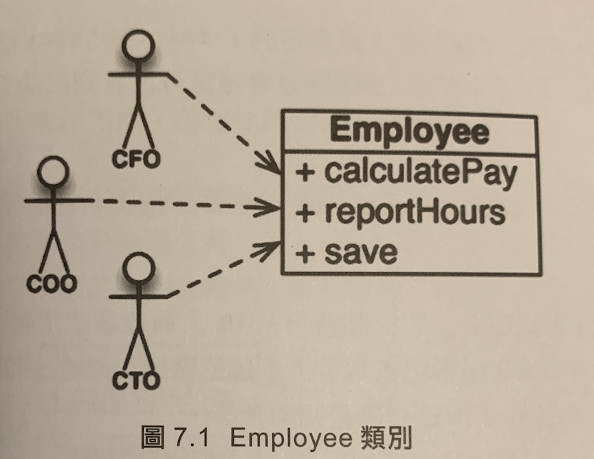
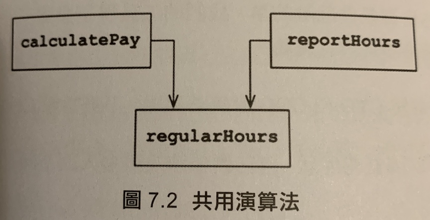
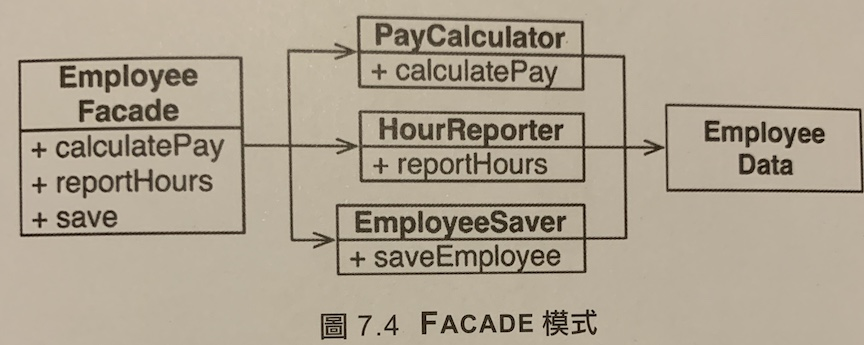

SRP: 單一職責原則
是個容易讓人誤會的名稱，程式設計師很容易因為這個名字，就假設它意味著每個模組都應該只做一件事情。底層對於函式是這樣沒有錯，但對 SOLID 來說，這不是 SRP。
傳統描述：
一個模組應該有一個，且只有一個理由會使其改變
而軟體系統被改變以滿足使用者和利益相關者，這兩者也就會是改變的理由。因此可以改寫成：
一個模組應該只對唯一的一個使用者或利益相關者負責
但實際上，可能會有多個使用者或利益相關者希望以相同方式更改系統。而這群人應該都是扮演相同的「角色 (actor)」
一個模組應該只對唯一的一個角色負責
而模組是：一個由函式和資料結構相互凝聚在一起的集合。
凝聚 (cohesive) 一詞意味著 SRP。凝聚就是種力量，將程式碼綁在一起對於一個角色負責
違反
症狀 1: 意外重複

這個列別違反了 SRP，因為這三個方法是對三種非常不同的角色負責。
假設那些注重不重複程式碼的開發者，將這個演算法放到了一個名為 regularHours() 的函式中。

假設使用 calculatePay() 的 CFO 想要調整非加班時間的計算方式，而使用 reportHours() 的 COO 並不想這樣做，因為他們使用方加班時間的目的是不同的。
開發人員進行修改，通常會一路改到 regularHours()，但在此可能會沒有注意到另一個部門也使用了他。
而產生了意外重複
症狀 2: 合併
當使用重複的程式碼時，又正好有多個人同時修改這份規則時，就會遇到最後 code merge 的問題，像是上述的例子，同時 CFO & COO 的團隊想要對 regularHours() 修改時，就會發生風險了。
解決方案
為了「分離支援不同角色的程式碼」且減少維護不同的實例化類別，常見的解決方案是 FACADE 設計模型。

總結
SRP 原則是關於函式和類別的，但是他又以不同的形式出現在兩個層次上，
- 在元件層次上，他成為 CCP 原則
- 在架構層次上，他成為負責建立架構邊界的變化軸。
低語
這個問提之前也有跟同事討論過，相對應於這個狀況，之所以選擇不重複程式碼，是為了避免之後修改時，沒有修改到所有需要調整的位置
討論到這裡，因為無法預測未來的變化，所以其實也不無道理，尤其是書上舉的例子，反而會覺得公司怎麼沒有統一非加班時間的計算 XD
但我覺得重點是：
「是否對於功能修改完後，還能有基本的測試，來確認原來的情境，會是正確的」
不論思考方向為何，重複或分開，都會有其風險。
而目前嘗試的方式，是在架構介面上切開，但是實作「恰巧」使用相同的物件。